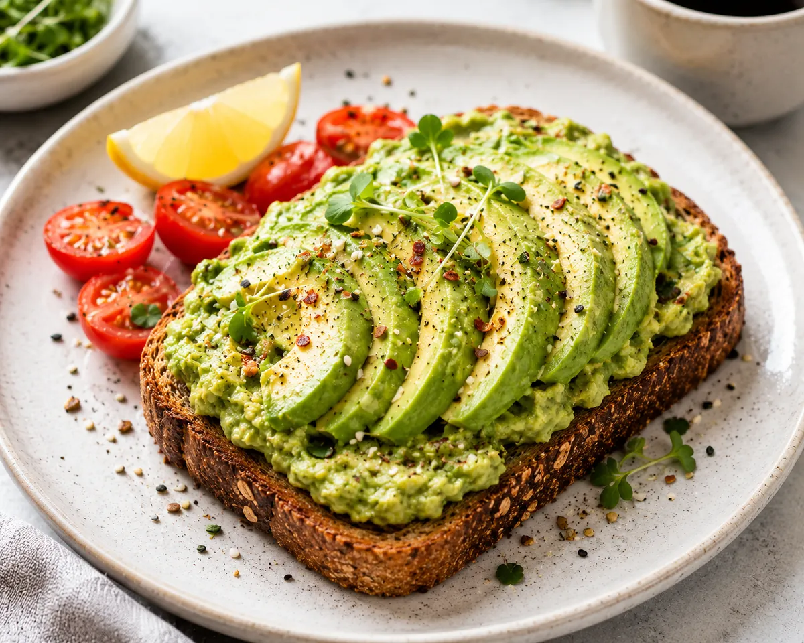

Smashed Avocado Toast

Avocado toast is simple, which means the details matter. A ripe avocado, a good thick slice of sourdough toasted until it really crunches, and a bright squeeze of lemon are what separate a great one from a soggy, bland one.
This version keeps the avocado slightly chunky so you get texture in every bite, then finishes with chili flakes, fresh microgreens and a drizzle of olive oil. It takes about 15 minutes and works for breakfast, lunch or a light dinner.
Ingredients
- 2 thick slices artisanal sourdough bread
- 1 ripe avocado
- 1 tbsp fresh lemon juice
- 1 small clove garlic, minced (optional)
- Salt and pepper, to taste
- 1/4 tsp red chili flakes
- Handful of microgreens
- Drizzle of extra virgin olive oil
Instructions
- Toast the sourdough slices until golden and crisp all the way through.
- Halve the avocado, remove the pit and scoop the flesh into a bowl. Add the lemon juice, garlic if using, salt and pepper, and mash with a fork until creamy but still slightly chunky.
- Spread the avocado generously over the warm toast, right to the edges.
- Sprinkle with chili flakes and top with a handful of microgreens.
- Finish with a light drizzle of olive oil and serve immediately.
Ingredient Notes and Substitutions
Choosing an avocado
A ripe avocado yields slightly when you press it gently, and the small stem cap pops off easily with green underneath. Rock-hard avocados can ripen on the counter in a few days. A paper bag speeds it up.
The bread
Sourdough has a sturdy crumb that holds up to the topping. Whole grain, rye or a country loaf also work. Cut the slices about 1/2 inch thick so they do not turn soft.
Lemon juice
Lemon adds brightness and slows browning. Lime works equally well.
Microgreens
These add freshness and a little crunch. Arugula, pea shoots or chopped fresh herbs are good substitutes.
Tips for Success
- Season the avocado well. Salt makes a big difference to flavor.
- Toast the bread until it is properly crisp, and spread the avocado while the toast is still warm.
- Rubbing a cut garlic clove over the hot toast gives a milder garlic flavor than mincing it into the avocado.
- Mash just before serving for the best color and texture.
Variations
- Top with a soft-boiled or fried egg for a heartier meal.
- Add sliced cherry tomatoes, thinly sliced radish or cucumber.
- Crumble feta or goat cheese on top.
- Use everything bagel seasoning in place of the chili flakes.
- Add a squeeze of hot sauce or a pinch of smoked paprika.
Storage and Make-Ahead
Avocado toast is best eaten right away. If you have leftover mashed avocado, press plastic wrap directly onto the surface to keep air out and refrigerate for up to a day. Stir before using, and add a little extra lemon if it has darkened on top. Toast the bread fresh each time.
Frequently Asked Questions
How do I keep avocado from turning brown?
Lemon or lime juice helps, and so does limiting air exposure. Cover leftovers with plastic wrap pressed directly onto the surface.
Can I make avocado toast ahead of time?
It is best made fresh. You can prepare the toppings in advance and mash the avocado just before serving.
Can I use gluten-free bread?
Yes. Toast it well, as gluten-free bread tends to be softer.
What if my avocado is not ripe?
An underripe avocado will be hard to mash and bland. Leave it at room temperature for a day or two before using.
Is this good for meal prep?
Not really, since the toast softens and the avocado browns. Prep the ingredients separately and assemble when you are ready to eat.